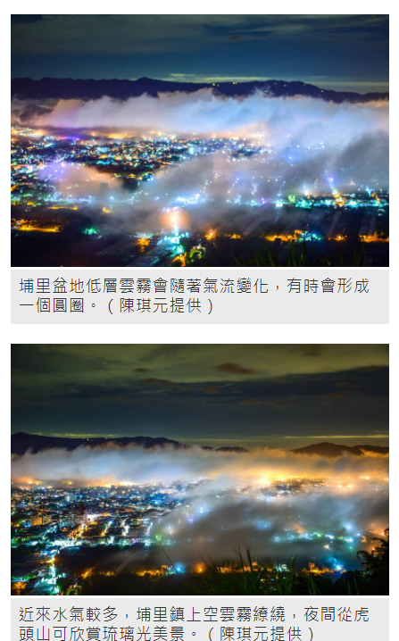

〔記者佟振國／南投報導〕近來水氣較多，南投縣埔里鎮虎頭山除了夜間可見琉璃光美景，清晨也能鳥瞰盆地上空雲霧繚繞美景，日前即有民眾拍下雲霧的縫隙呈現像是愛心形狀，讓人不禁讚歎大自然的奇妙。
日前滯留鋒面與西南氣流為埔里帶來較多雨勢，對緩解旱象有極大幫助，最近的午後降雨，除了能夠稍解暑氣，也能製造美景讓人大飽眼福，埔里鎮虎頭山夜間到清晨就有攝影玩家駐足獵取美景。
水氣在埔里盆地上空形成雲霧，夜間在燈光反射下，色彩千變萬化，形成如夢幻般的琉璃光，清晨雲霧未散，隨著風勢流動，也呈現不同造型，也有民眾拍下心形的雲霧照片分享。
民眾指出，虎頭山居高臨下，能清楚看到埔里盆地的低層雲霧，有時氣流等因素，會在市區上空環繞，甚至形成甜甜圈或是貝果的形狀，日前清晨上山運動，測試一下則是發現雲霧中的縫隙就像是個愛心，順手拍下分享，尤其埔里就在台灣正中心，現在疫情當頭，也需要全民同心抗疫，度過難關。
